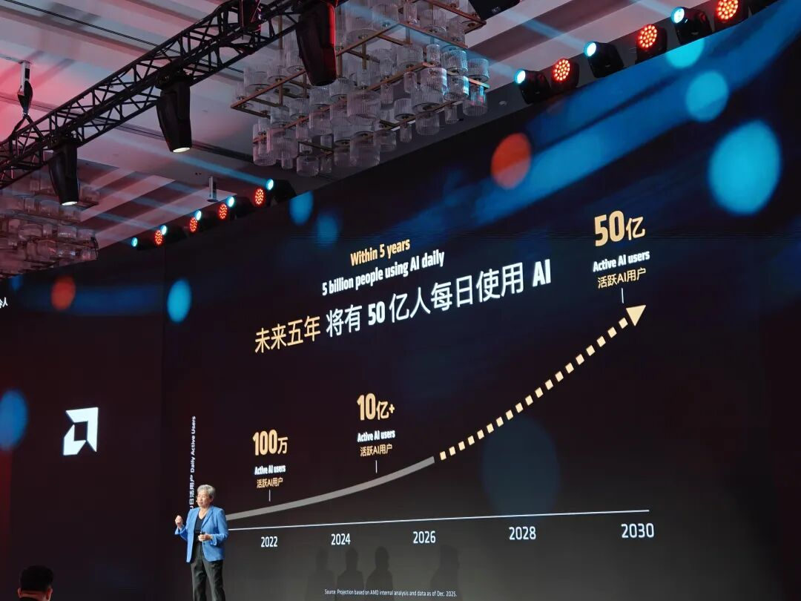
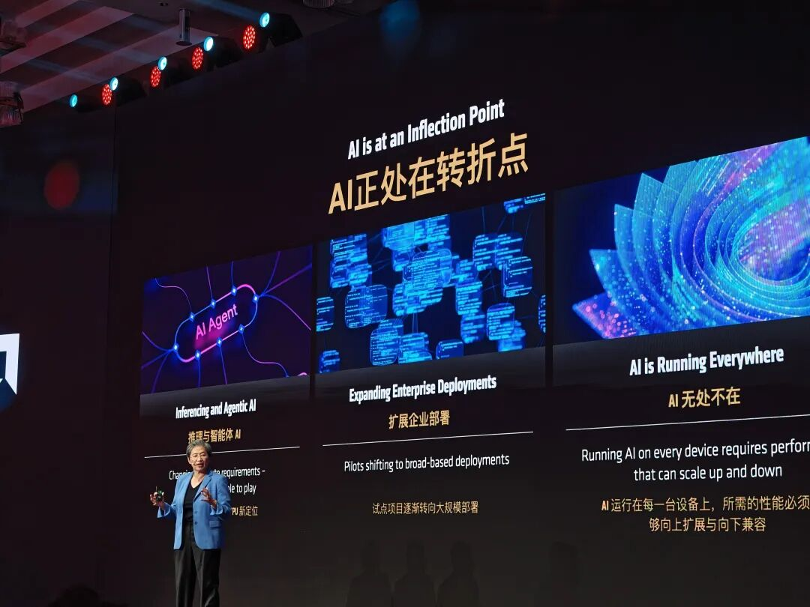
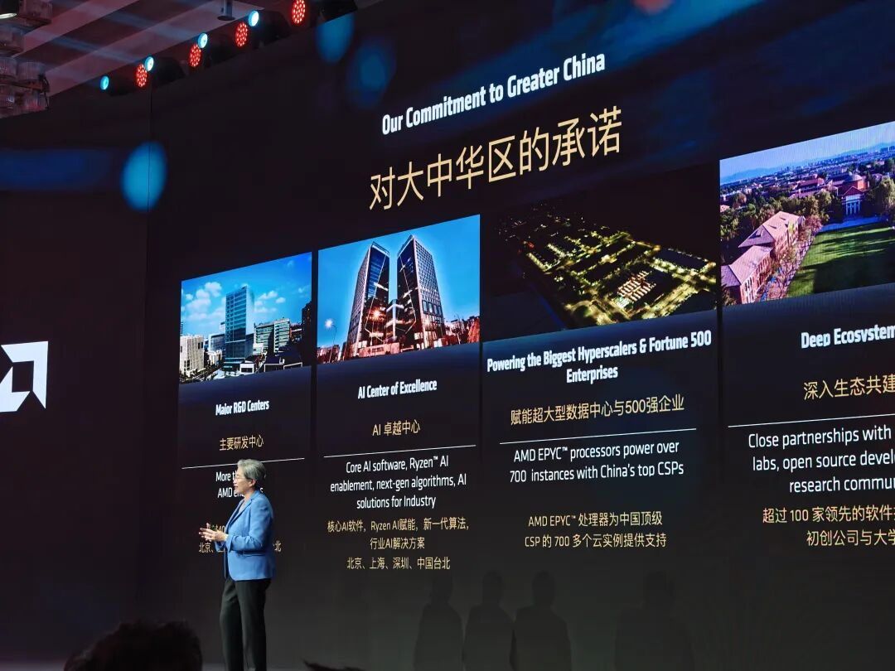
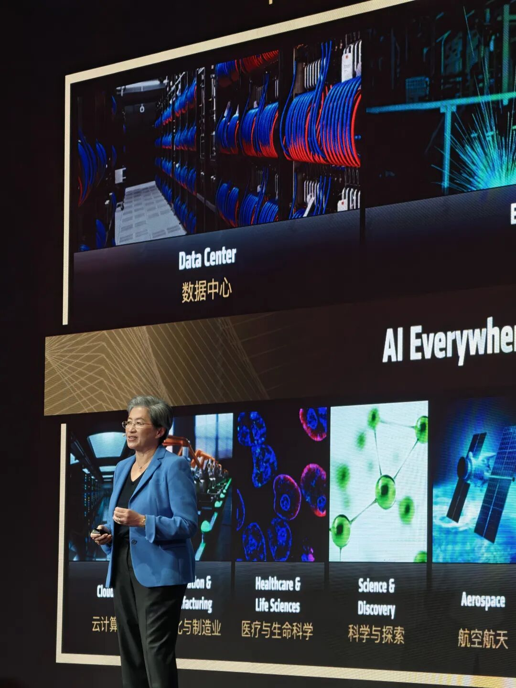
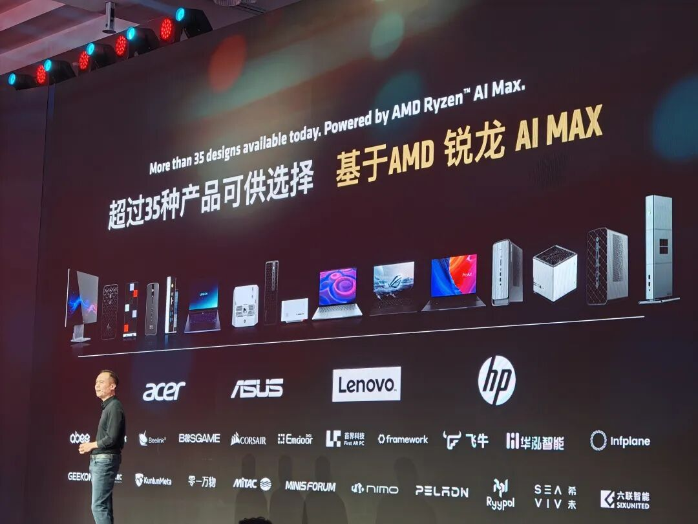
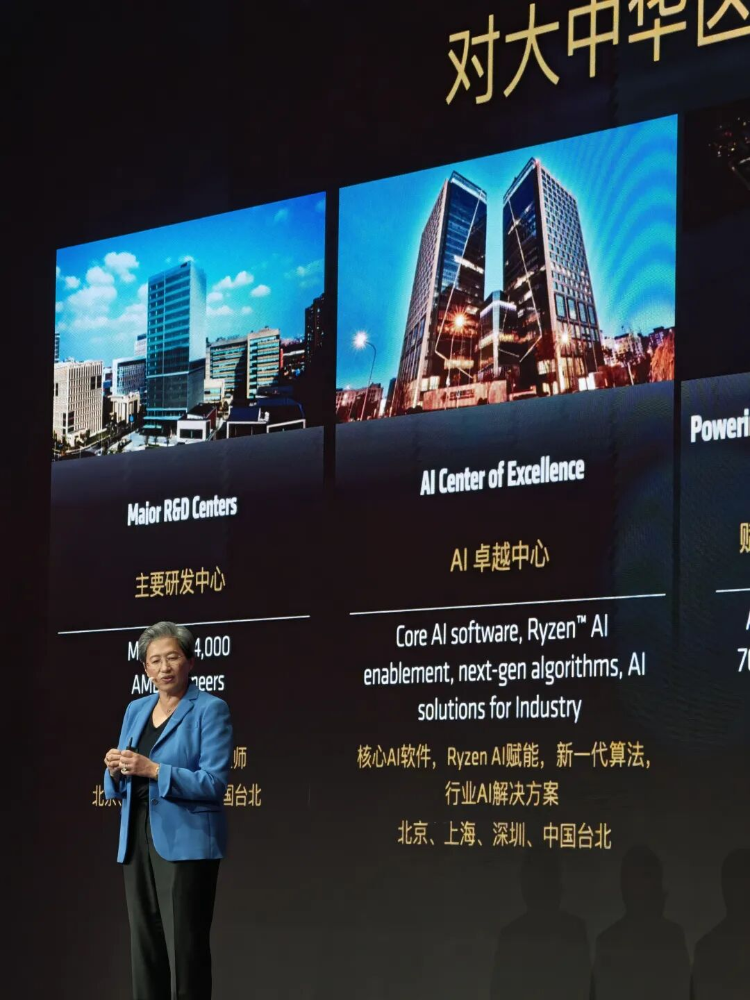
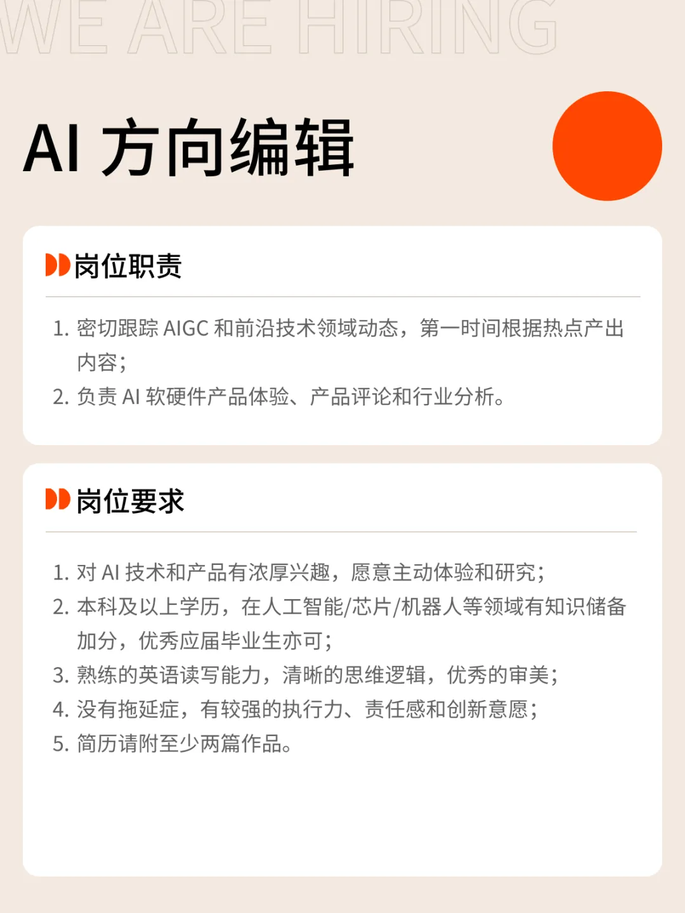

📈 黄仁勋刚走，苏妈就来了 | 附演讲全文
Jensen Huang and Lisa Su Speeches Full Text
这是 AMD 第一次把 AI 开发者developer[dɪˈveləpər] n. 开发者大会搬到中国。苏姿丰没穿皮衣，开场第一句话是冲着全场喊：「你们兴奋excited[ɪkˈsaɪtɪd] adj. 兴奋的吗？」台下站满了人，连过道aisle[aɪl] n. 过道；通道都挤不动。
AMD 在中国卖了三十多年芯片chip[tʃɪp] n. 芯片，但这次不太一样。苏妈带着 ROCm、八大实操工作坊、还有一整个开源生态ecosystem[ˈiːkoʊsɪstəm] n. 生态系统来，还顺手把上海研发中心的家底亮了出来：它是 AMD 全球最大的研发中心之一。
她给了一个数字：未来几年，全球 AI 活跃active[ˈæktɪv] adj. 活跃的用户将超过五十亿。

苏妈在现场花了大段篇幅讲一件事：大语言模型「问一个问题、得一个答案」的时代era[ˈɪrə] n. 时代；纪元正在翻篇。
「我们每个人可以拥有 5 个智能体agent[ˈeɪdʒənt] n. 智能体；代理、10 个智能体，或者 100 个智能体。想想你能多做多少事情。」
要撑住这些智能体，光有大模型不够，还得有推理reasoning[ˈriːzənɪŋ] n. 推理能力、学习能力和数据流能力。不出意外，可见 AMD 也正在押注bet[bet] v. 押注；下注 Agent。
苏妈也没忘了夸夸台下的中国开发者 ，甚至把中国市场抬到了驱动drive[draɪv] v. 驱动 AMD 路线图的核心位置。
以下是 APPSO 在现场整理的苏姿丰主题theme[θiːm] n. 主题演讲全文，enjoy~
大家好！我想先问大家一个问题：你们兴奋吗？
很高兴delighted[dɪˈlaɪtɪd] adj. 高兴的；欣喜的来到这里，很高兴见到你们中的这么多人。我可以说——掌声好热烈enthusiastic[ɪnˌθuːziˈæstɪk] adj. 热烈的；热情的！今天的活动现场venue[ˈvenjuː] n. 现场；场地座无虚席，甚至站满了人。我非常自豪proud[praʊd] adj. 自豪的今天能来到上海。
这场活动是为你们准备的——为我们的开发者、我们的建设者，以及更多的合作伙伴partner[ˈpɑːrtnər] n. 伙伴；合作伙伴。这真是一个让我们共同创新innovation[ˌɪnəˈveɪʃən] n. 创新的机会。而这一点，正是当下最特别special[ˈspeʃəl] adj. 特别的的地方。
AI 正以真正前所未有unprecedented[ʌnˈpresɪdentɪd] adj. 前所未有的的速度创新。正因为如此，聪明人更频繁frequently[ˈfriːkwəntli] adv. 频繁地地聚在一起讨论最新的创新，这一点变得前所未有的重要。
在 AMD，你们都非常了解understand[ˌʌndərˈstænd] v. 了解；理解我们。我们的使命mission[ˈmɪʃən] n. 使命，是真正推动高性能计算和 AI 的边界。 因为我们坚信，高性能计算与 AI 是一种向善的技术technology[tekˈnɑːlədʒi] n. 技术。凭借它，我们能够解决世界上最有趣的问题，也能应对世界上最重要的挑战challenge[ˈtʃælɪndʒ] n. 挑战。
我们正在共同为下一代 AI 计算构建基础foundation[faʊnˈdeɪʃən] n. 基础。
当我们思考这一切时，有一点我们非常自豪：AMD 的技术每天触达数十亿billion[ˈbɪljən] n. 数十亿人。无论你是谈论数据中心、PC，还是边缘edge[edʒ] n. 边缘设备，AI 实际上正在重新定义计算的每一层。
我们的理念concept[ˈkɑːnsept] n. 理念；概念是：AI 应该无处不在。
AI 为每个人服务，为每个工作负载workload[ˈwɜːrkloʊd] n. 工作负载服务，为每种形态服务。这意味着，我们需要真正地在整个技术栈的每一层layer[ˈleɪər] n. 层；层级都进行创新。

AMD 对中国市场的承诺是非凡extraordinary[ɪkˈstrɔːrdəneri] adj. 非凡的；卓越的的。中国是全球最活跃的 AI 生态系统，而 AMD 已经在这里深耕cultivate[ˈkʌltɪveɪt] v. 深耕；培育超过三十年。
我们将中国视为regard[rɪˈɡɑːrd] v. 视为；认为驱动我们路线图的核心部分——这包括芯片、AI、软件和平台工程。实际上actually[ˈæktʃuəli] adv. 实际上，我们的上海研发中心和中国研发中心，是全球最大的研发中心之一。
我们之所以这样做，是因为我们坚信：我们需要在这里，与世界上最聪明的 AI 从业者practitioner[prækˈtɪʃənər] n. 从业者互动。
从 AMD 的角度来看，我们的投资远不止于研发，而是真正聚焦focus[ˈfoʊkəs] v. 聚焦；专注于整个技术栈的每一层——从芯片、软件到系统。这就是为什么我们在中国多个领域投资了 AI 卓越excellence[ˈeksələns] n. 卓越中心；
这就是为什么我们与中国最大、最具影响力influence[ˈɪnfluəns] n. 影响力的云和企业公司建立合作；这就是为什么我们对这里的生态系统有着不可思议incredible[ɪnˈkredəbəl] adj. 不可思议的的投入。

中国生态系统真正令人兴奋的地方在于，你们正引领着智能体 AI（Agentic AI）和企业级enterprise[ˈentərpraɪz] n. 企业级；企业 AI 的发展。这是一种非常特别的力量，它实际上是我们 AMD 所坚信的、推动promote[prəˈmoʊt] v. 推动；促进 AI 系统尽可能向前发展的基础。
当我们真正思考 AI 时，我们今天所看到的进展progress[ˈprɑːɡres] n. 进展量是不可思议的。目前，全球已有超过十亿活跃用户user[ˈjuːzər] n. 用户。但更令人兴奋的是我们的预测prediction[prɪˈdɪkʃən] n. 预测：未来几年内，全球活跃用户将超过五十亿。
而支撑这一切用户增长growth[ɡroʊθ] n. 增长的最关键故事，是拥有正确的应用。没有单一的应用，没有单一的工作流workflow[ˈwɜːrkfloʊ] n. 工作流。实际上，你需要各种各样various[ˈveriəs] adj. 各种各样的的模型，你需要各种各样的工作流。
我们拥有构建模块，去用 AI 彻底改变我们在生活、在商业commerce[ˈkɑːmɜːrs] n. 商业中、在互动方式上的一切。这就是当下作为一个技术technical[ˈteknɪkəl] adj. 技术的人如此令人兴奋的原因。
实际上，你们都非常清楚，过去几年我们已经看到了 AI 的加速accelerate[əkˈseləreɪt] v. 加速发展。但就在最近几个月，我们看到了 AI 的诸多numerous[ˈnuːmərəs] adj. 诸多的；许多的成功。我们不仅看到了开源模型，我们真正看到智能体 AI（Agentic AI）正变得无比普及prevalent[ˈprevələnt] adj. 普及的；流行的。
你可以看到企业真正在谈论如何利用utilize[ˈjuːtəlaɪz] v. 利用 AI。我可以告诉你，每个国家的每一位 CEO，无论是大型企业、媒体企业还是小型企业，每个人都在谈论如何用 AI 更有效effective[ɪˈfektɪv] adj. 有效的地影响他们的业务。

同样真实的是，AI 如今正在生态系统的每个角落运行operate[ˈɑːpəreɪt] v. 运行；操作——从云端到 PC，到边缘，再到物理系统和机器人。我们看到了如此多的创新正在发生，而开放性openness[ˈoʊpənnəs] n. 开放性至关重要。
当我们展望未来，这是最近四个月里真正发生的事情：我们发现，传统的大语言模型——我们都知道它们很酷，你可以问一个问题，得到一个答案，这很酷——但当下真正压倒性overwhelming[ˌoʊvərˈwelmɪŋ] adj. 压倒性的的是，随着开源和围绕智能体的诸多新创新，我们看到智能体 AI 正在彻底改变我们使用 AI 的方式。
我希望有机会看到我们更多合作伙伴在外场展示demonstrate[ˈdemənstreɪt] v. 展示；演示的 Demo，那些 Demo 向你展示了真正的可能性：当你思考的不只是你向模型提出多个问题，而是我们如何用 AI 真正拥有多个智能体时，会发生什么。
我们每个人可以拥有possess[pəˈzes] v. 拥有 5 个智能体、10 个智能体，或者 100 个智能体。想想你能多做多少事情。
而伴随accompany[əˈkʌmpəni] v. 伴随；陪同着这一点，技术本身也在改变。技术正在以一种方式改变：你不仅需要在中心拥有大语言模型，你真正需要的是推理能力、学习learning[ˈlɜːrnɪŋ] n. 学习能力，以及数据流能力。这样你才能持续continuous[kənˈtɪnjuəs] adj. 持续的推理、处理更多数据，然后回来继续学习——而智能体正好需要这一切。
这意味着什么呢？当然certainly[ˈsɜːrtnli] adv. 当然，每个人都爱 GPU。你们爱 GPU 吗？是的！你们想要更多 GPU 吗？是的！未来future[ˈfjuːtʃər] n. 未来会有更多 GPU。
但 GPU 将无处不在，不仅在云端，而是横跨span[spæn] v. 横跨；跨越整个生态系统。除了 GPU，你还需要大量的 CPU 处理能力，才能真正具备作为一个完整integral[ˈɪntɪɡrəl] adj. 完整的；必需的智能体运行的能力。

所以你需要完整的端到端计算谱系spectrum[ˈspektrəm] n. 谱系；范围。而这就是 AMD 的关注点：提供provide[prəˈvaɪd] v. 提供完整的端到端计算能力。
如果你看我们的承诺，我们的承诺是真正构建construct[kənˈstrʌkt] v. 构建；建造 AI 时代的计算基础。这意味着在云端和边缘拥有最佳、最具领导力leadership[ˈliːdərʃɪp] n. 领导力的路线图。我特别要在这里说：在中国，目前在智能体 AI 和本地local[ˈloʊkəl] adj. 本地的；当地的 AI 领域正发生着如此多的创新，你们在这里做着世界上最好的工作之一。
我们的目标也是与生态系统合作，与中国这里所有的开源项目合作，与模型合作，并真正实现与 AMD 硬件的深度集成integration[ˌɪntɪˈɡreɪʃən] n. 集成。有了这些，客户才真正有机会为他们的每一个应用，选择合适appropriate[əˈproʊpriət] adj. 合适的的计算、合适的模型、合适的能力。

今天我们会谈论很多不同的事情，但你们需要理解的一个关键key[kiː] n. 关键点是：
AMD 的关注点纯粹聚焦于为 AI 交付deliver[dɪˈlɪvər] v. 交付；交付最佳计算，延伸我们的计算技术领导力，真正围绕生态系统展开。关键是，我们想与你们合作，与
所有的开发者、软件software[ˈsɔːftwer] n. 软件开发者，
与我们的 ROCm 和开发者生态合作cooperate[koʊˈɑːpəreɪt] v. 合作。
然后，我们希望将 AI 带到生态系统的每个角落corner[ˈkɔːrnər] n. 角落。这就是为合适的应用提供合适的计算compute[kəmˈpjuːt] v. 计算的理念。
「姓名+岗位名称」（请随简历resume[rɪˈzjuːm] n. 简历附上项目/作品或相关链接）
